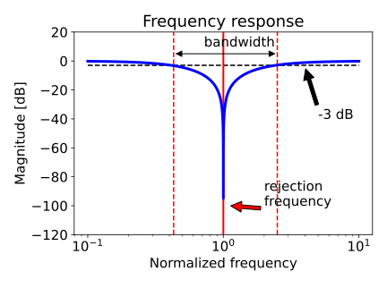
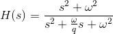
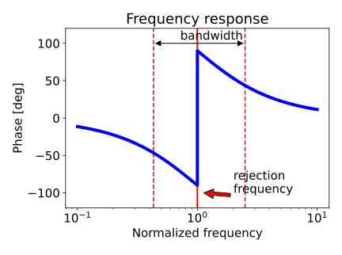

This module removes spike noise from the frequency spectrum of the broadband signal and writes out the filtered broadband channels.
The noise removal is achieved by applying one or several notch filters, i.e. a (very) narrow band-stop filter. See the Details section below for the exact mathematical definition and further background information.
In order to apply a notch filter in KORONA, its parameters need to be specified in the file.
This module requires a configuration file containing the definition of the notch filters to apply to the data. The file can be edited directly from the configuration of the module.
Each notch filter is defined by the following required parameters:
The figure below shows the magnitude frequency response of a single notch filter and illustrates the meaning of these two parameters.

Besides the filter parameters, it is also possible to specify the temporal validity of each of the notch filters by giving start and/or stop time. Time is to be specified in ISO 8601 format, i.e. [YYYY]-[MM]-[DD]T[hh]:[mm]:[ss]Z.
It should be noted that the frequency resolution in the data is limited by the inverse of the pulse length. Thus, the filter bandwidth should be at least 2-3 times this limit resolution in order to capture the notch properly. E.g. for a pulse duration of 2 milliseconds, the filter width should be at least 1-1.5 kHz.
If already filtered data are processed by the module, only filters not already applied are considered. In other words, the set of filters applied is the union of previously applied and the currently specified filters, no filter is applied more than once.
The used notch filter is defined by the following transfer function.

where ω is the rejection frequency and q is the quality factor determining the bandwidth. The q-factor is found iteratively for a prescribed bandwidth.
The figure below shows the phase response of a notch filter with a rejection frequency of 1 Hz. For the magnitude response, see the figure above. The bandwidth of the filter is user chosen.
